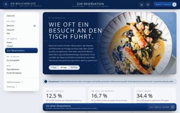

Die Besucherliste · Anleitung 15 Zustände · 19 rote Felder · http://127.0.0.1:9286/_werkzeuge/registre/anleitung.html · 5.1 min, jede Breite 1440/1280/1000/390
| # | Zustand | Bild WebKit 1440×900 | 1M | 2M | 3M | 4M+A | 5M | 6A | 7M | 8A | 9A | 10A | 11A | 12M | 13M+A | 14A | 15M | 16A | 17A | 18M | 19A | 20A | 21M | 22A | 23M+A | 24M | 25A | 26A | 27M | 28A | 29A | 30A | 31M | 32M+A | 33A | 34M | 35M | 36A | 37A+M |
|---|---|---|---|---|---|---|---|---|---|---|---|---|---|---|---|---|---|---|---|---|---|---|---|---|---|---|---|---|---|---|---|---|---|---|---|---|---|---|---|
| 001 | Startstart · 390: 0 Funde, 1000: 0 Funde, 1280: 0 Funde · gleichartig: 10 Stück, 5 bedient |  | 1 | ||||||||||||||||||||||||||||||||||||
| 002 | DIE BESUCHERLISTE ÖFFNENunterseite · 390: 0 Funde, 1000: 0 Funde, 1280: 0 Funde |  | 1 | ||||||||||||||||||||||||||||||||||||
| 003 | Bild gross ansehen: Der Aufbau auf einenfenster · 390: 0 Funde, 1000: 0 Funde, 1280: 0 Funde · gleichartig: 5 Stück, 5 bedient | 1 | |||||||||||||||||||||||||||||||||||||
| 004 | DIE BESUCHERLISTE ÖFFNEN → Besuche 1navigation · 390: 0 Funde, 1000: 0 Funde, 1280: 1 Funde | 2 | 1 | ||||||||||||||||||||||||||||||||||||
| 005 | DIE BESUCHERLISTE ÖFFNEN → Herkunftnavigation · 390: 0 Funde, 1000: 0 Funde, 1280: 0 Funde |  | 1 | ||||||||||||||||||||||||||||||||||||
| 006 | DIE BESUCHERLISTE ÖFFNEN → Zeitnavigation · 390: 0 Funde, 1000: 0 Funde, 1280: 0 Funde |  | 1 | ||||||||||||||||||||||||||||||||||||
| 007 | DIE BESUCHERLISTE ÖFFNEN → Seitennavigation · 390: 0 Funde, 1000: 0 Funde, 1280: 0 Funde | 1 | |||||||||||||||||||||||||||||||||||||
| 008 | DIE BESUCHERLISTE ÖFFNEN → Verlaufnavigation · 390: 0 Funde, 1000: 0 Funde, 1280: 0 Funde |  | 1 | ||||||||||||||||||||||||||||||||||||
| 009 | DIE BESUCHERLISTE ÖFFNEN → Zur Reservationnavigation · 390: 0 Funde, 1000: 0 Funde, 1280: 0 Funde |  | 1 | ||||||||||||||||||||||||||||||||||||
| 010 | DIE BESUCHERLISTE ÖFFNEN → So wird gezähltnavigation · 390: 0 Funde, 1000: 0 Funde, 1280: 0 Funde |  | 1 | ||||||||||||||||||||||||||||||||||||
| 011 | DIE BESUCHERLISTE ÖFFNEN → Kurzer Rundgangfenster · 390: 0 Funde, 1000: 0 Funde, 1280: 0 Funde |  | 1 | ||||||||||||||||||||||||||||||||||||
| 012 | DIE BESUCHERLISTE ÖFFNEN → DE Konstanz, Deutschland Gestern, 19:41 Uhr 4ansicht · 390: 0 Funde, 1000: 0 Funde, 1280: 1 Funde | 2 | 1 | ||||||||||||||||||||||||||||||||||||
| 013 | DIE BESUCHERLISTE ÖFFNEN → DE Friedrichshafen, Deutschland Gestern, 19:03 Uhr 3ansicht · 390: 0 Funde, 1000: 0 Funde, 1280: 0 Funde | 1 | |||||||||||||||||||||||||||||||||||||
| 014 | DIE BESUCHERLISTE ÖFFNEN → CH Winterthur, Schweiz Gestern, 19:02 Uhr 6ansicht · 390: 0 Funde, 1000: 0 Funde, 1280: 1 Funde | 2 | 1 | ||||||||||||||||||||||||||||||||||||
| 015 | DIE BESUCHERLISTE ÖFFNEN → CH Zürich, Schweiz Gestern, 17:43 Uhr 4ansicht · 390: 0 Funde, 1000: 0 Funde, 1280: 1 Funde | 2 | 1 |